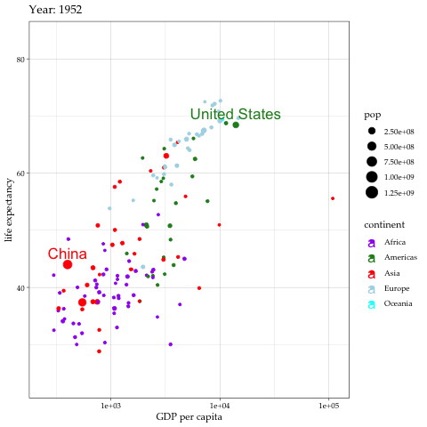

8 Data Modeling with R
This chapter introduces methods of modeling data using R. Given the breadth of this topic, we will cover some basic machine learning models including:
unsupervised learning
supervised learning:
Classification
Regression
Tree-based models
automated machine learning
- H2O
8.1 What is machine learning?
8.1.1 Statistics and Machine Learning
Let’s startswith basic concepts of statistics and machine learning models. Traditionally, we use statistics to estimate models and test hypotheses using data. We can collect data, describe variables such as averages, variances and distributions and then explain relationships between two or more variables. The roots of statistics lie in working with data and checking theory against data (Breiman 2001). This data model replies heavily on the theory and hypotheses to first generate or collect data to test the model, in an attempt to explain the relationship before prediction. Machine learning takes on a different approach. It focuses on prediction by using algorithmic models without first developing a theory then hypothesis. UC Berkeley Statistics professor Leo Breiman compares the two cultures of statistics in his famous 2001 paper and explains the difference. He argues that with so much data coming in from all sources and directions, using the data model approach alone may not be most effective in making the best use of data to solve the problem. He suggests employing algorithmic models to improve prediction. Algorithms refer to a sequence of computational and/or mathematical programs to solve the problem. The goal of algorithmic models is to identify an algorithm that operates on predictor variables (x) to best predict the response variable (y).
8.1.2 Machine learning
The ultimate goal of data modeling is to explain and predict the variable of interest using data. Machine learning is to achieve this goal using computer algorithms in particular to more effectively make the prediction and solve the problem. According to Carnegie Mellon Computer Science professor Tom M. Mitchell, machine learning is the study of computer algorithms that allow computer programs to automatically improve through experience. To statisticians, the “improve through experience” part is the process of validation or cross validation. Learning can be done through repeated exercises to understand data. This involves having computer or statistics programs do repeated estimations, like human learns from experience and improve actions and decisions. This is called the training process in machine learning.
“A computer algorithm/program is said to learn from performance measure P and experience E with some class of tasks T if its performance at tasks in T, as measured by P, improves with experience E.” -Tom M. Mitchell.


Example: Multi-dimensional plot of data
8.1.2.1 Recommended R Resources:
- The R Journal
- Introduction to R by W. N. Venables, D. M. Smith and the R Core Team
- Introduction to R Seminar at UCLA
- Getting Started in Data Analysis using Stata and R by Data and Statistical Services, Princeton University ## Illustration: Taiwan election data using caret package